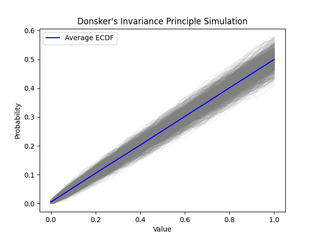

Introduction:
Donsker's Invariance Principle is a key result in probability theory, extending the Central Limit Theorem to function spaces. It states that certain functionals of random processes, specifically empirical distribution functions (ECDFs) in the case of independent and identically distributed (i.i.d.) random variables, converge to a Gaussian process as the number of observations increases.
Proof:
The proof involves establishing tightness of the sequence of empirical processes and showing that the limiting process is a mean-zero Gaussian process with a covariance structure determined by the underlying distribution. The result has applications in non-parametric statistics and econometrics.
Simulation of Donsker's Invariance Principle:
The script simulates Donsker's Invariance Principle by generating multiple ECDFs from i.i.d. uniform random variables. The average ECDF converges to a limiting process, illustrating the convergence to a Gaussian process as predicted by the invariance principle.
Practical Significance:
Donsker's Invariance Principle is foundational in the understanding of the behavior of non-parametric statistical procedures. It provides a bridge between empirical processes and Gaussian processes, facilitating the analysis of statistical functionals and their asymptotic behavior.
Donsker's Invariance Principle Simulation Plot: Donsker's Invariance Principle Simulation Plot
Conclusion:
Simulating Donsker's Invariance Principle offers a visual demonstration of the convergence of empirical distribution functions to Gaussian processes. This powerful result extends the reach of the Central Limit Theorem to function spaces, enhancing our understanding of the asymptotic behavior of statistical functionals.